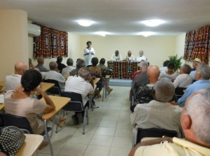
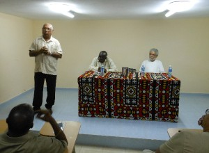
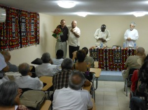

Texto y fotos: Camilo García Lopez-trigo.   
Sumario: Al presentarse el libro Por los caminos de África, del Embajador Oscar Oramas el jueves 24 de septiembre en la Casa de la Cultura de Angola, se reafirmó la significación cultural e histórica de ese continente para el pueblo cubano.
Escasas son las oportunidades para conocer de primera mano el testimonio del compromiso asumido por la Revolución cubana de ayudar a los movimientos de liberación nacional en el continente africano. Una extraordinaria oportunidad para adentrarnos en sus detalles – contado por uno de sus protagonistas – lo constituye la publicación del libro Por los caminos de África, del Embajador Oscar Oramas Oliva, editado por la Colección SurEditores de la UNEAC y presentado en la tarde del jueves 24 de septiembre de 2015 en la Casa de la Cultura de Angola de La Habana.
La obra recoge reflexiones, anécdotas, ensayos, discursos y mucha de su experiencia acumulada en las numerosas misiones al continente africano y sus responsabilidades en el Ministerio de Relaciones Exteriores durante los años cruciales del convulso proceso de la independencia africana, fundamentalmente a finales de los 60 und die 70 del pasado siglo. En sus páginas se puede apreciar una perspectiva cubana autorizada – a partir de su participación directa en los acontecimientos que narra – sobre la vasta historia africana, no solo como representante diplomático cubano en varias de sus naciones sino también desde el asiento de Cuba en las Naciones Unidas y en los encuentros del entonces ferviente Movimiento de Países No Alineados, en momentos claves de la inserción de sus pueblos en el concierto de naciones independientes.
Muchas son las personalidades que pasan por sus recuerdos: el dirigente argelino Houari Boumédiene y sus relaciones con Fidel y el Ché; las experiencias con el líder guineano Amílcar Cabral, de quien considera que su ideario estará presente en cada pueblo que se decida a luchar por la independencia; las lecciones del depuesto Presidente de Guinea Conakry Kwame Nkrumah; detalles de las relaciones de hermandad con Agostinho Neto y los orígenes de la ayuda militar cubana a la definitiva independencia de Angola, con su consecuente influencia en el resto del continente.
Se reviven también otros nombres históricos y trascendentales en la historia africana de la segunda mitad del siglo XX como Ahmed Ben Bella, Abdelaziz Bouterflika, Sekou Touré, Patricio Lumumba, Julius Nyerere, entre muchos otros, incluyendo aquellos no tan conocidos pero sin cuya abnegación y sacrificio no hubiera podido forjarse ese tortuoso camino de lograr una África independiente.
Se destaca también el papel de otras personalidades cubanas como el Canciller de la Dignidad Raúl Roa García, el comandante Juan Almeida, el Vicepresiente Carlos Rafael Rodríguez, el entonces responsable de los asuntos africanos en el Comité Central del Partido Osmany Cienfuegos, el Vicepresidente del Consejo de Ministros Joel Domenech, el Embajador cubano en Argelia José Serguera, los generales Rolando Kindelán y Víctor Dreke y muchos más.
Fue precisamente este último, ahora Presidente de la Asociación de Combatientes en La Habana, el encargado de hacer la presentación del libro ante la presencia de los Embajadores de Angola y Mozambique y una sala abarrotada de colegas y amigos. Dreke resaltó en el libro de Oramas la importancia de luchar por que no se pierda la historia y la memoria de quienes combatieron en África por su definitiva independencia.
Alex Pausides, Director de SurEditores y Presidente de la Asociación de Escritores de la UNEAC, consideró que la publicación de este libro viene a coronar el trabajo que ha realizado esa casa editorial al publicar 12 libros sobre literatura africana, lo que de hecho se convierte en “un espacio de conocimiento sobre África contemporánea” que debe continuar ampliándose. Valoró el texto como útil, pues su lectura brinda un momento especial que revela lo que significó Angola y tantas otras acciones internacionalistas para nuestras vidas.
Andererseits, el autor expresó emocionado su satisfacción de presentar este libro como fruto no solo de su participación y observación, sino del estudio sistemático, que le permitió enfrentar todos los retos que se le presentaron. Se alegró de que se realizara la presentación justo cuando se conmemoran los 40 años del establecimiento de relaciones entre Cuba y Angola, ceremonia en la que tuvo el honor de formar parte junto al entonces Canciller – ahora Presidente Angolano – José Eduardo Dos Santos.
En África “encontré hombres de cultura enciclopédica y aprendí a respetar y apreciar el gran aporte de esos pueblos a la civilización universal”, dice Oramas en la introducción, ratificando su convicción de que nunca fue a sus misiones con la idea de dar lecciones, sino de aprender. Y le dedicó el libro a los médicos cubanos que han luchado contra el ébola, lo que consideró como “una de las proezas más grandes que ha hecho Cuba en el continente africano”, ante la presencia del Dr. Félix Báez quien sobrevivió a la epidemia y terminó de cumplir su misión en Sierra Leona.


Oscar Oramas (Cienfuegos, 1936) es Doctor en Ciencias Históricas por la Academia de Ciencias de Hungría (1988) y Máster en Historia del Arte por la Universidad de La Habana (2008). Fue diplomático desde 1959 y nombrado Embajador de Cuba en varios países y ante organismos internacionales.
Ha publicado numerosos libros como: Angola: ha nacido una nueva generación (Ed. Ciencias Sociales, 1978), USA: la otra cara (Ed. Política, 1987), Las personalidades políticas más descollantes del proceso de descolonización en África (Ed. Política, 1990), Amilcar Cabral, más allá de su tiempo (Ed. Coté Femmes, Paris, 1998), El alma del cubano: su música (Ed. Prensa Latina, 2002), Los desafíos del siglo XXI (Ed. Gitanjali, Venezuela, 2003) und Los ángeles también cantan (Ed. Herrenhaus, 2009).